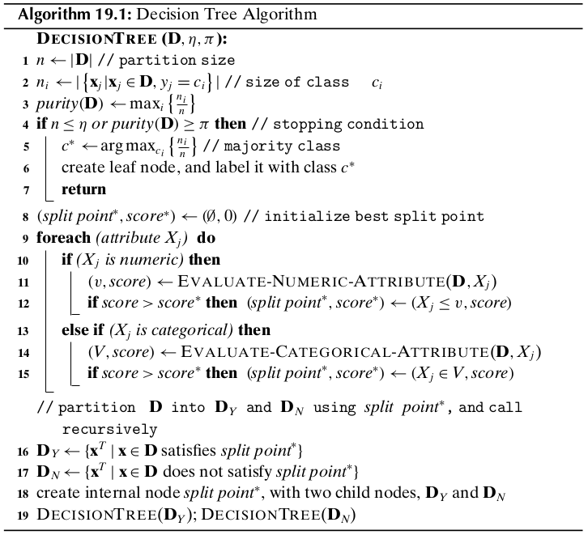

Chapter 19 Decision Tree Classifier¶
Let \(\cl{R}\) denote the data space that encompasses the set of input points \(\D\). A decision tree uses an axis-parallel hyperplane to split the data space \(\cl{R}\) into two resulting half-spaces or regines, \(\cl{R}_1\) and \(\cl{R}_2\), which also induces a partition of the input points into \(\D_1\) and \(\D_2\), respectively. Each of these regions is recursively split via axis-parallel hyperplanes until the points within an induced partition are relatively pure in terms of their class labels, that is, most of the points belong to the same class. The resulting hierarchy of split decisions constitutes the decision tree model, with the leaf nodes labeled with the majority class among pooints in those regions. To classify a new test point we have to recursively evaluate which half-space it belongs to until we reach a leaf node in the decision tree, at which point we predict its class as the label of the leaf.
19.1 Decision Trees¶
Axis-Parallel Hyperplanes
A hyperplane \(h(\x)\) is defined as the set of all points \(\x\) that satisfy the following equation
Note
\(h(\x):\w^T\x+b=0\)
Here \(\w\in\R^d\) is a weight vector that is normal to the hyperplane, and \(b\) is the offset of the hyperplane from the origin. A decision tree considers only axis-parallel hyperplanes, that is, the weight vector must be parallel to one of the original dimensions or axes \(X_j\). Put differently, the weight vector \(\w\) is restricted a priori to one of the standard basis vectors \(\{\e_1,\e_2,\cds,\e_d\}\), where \(\e_i\in\R^d\) has a 1 for the \(j\)th dimension, and 0 for all other dimensions. If \(\x=(x_1,x_2,\cds,x_d)^T\) and assuming \(\w=\e_j\), we can rewrite as
where the choice of the offset \(b\) yields different hyperplanes along dimension \(X_j\).
Split Points
A hyperplane specifies a decision or split point because it splits the data space \(\cl{R}\) into two half-spaces. All points \(\x\) such that \(h(\x)\leq 0\) are on the hyperplane or to one side of the hyperplane, whereas all points such that \(h(\x)>0\) are on the hyperplane or to one side of the hyperplane, whereas all points such that \(h(\x)>0\) are on the other side. The split point associated with an axis-parallel hyperplane can be written as \(h(\x)\leq 0\), which implies that \(x_i+b\leq 0\), or \(x_i\leq-b\). Because \(x_i\) is some value from dimension \(X_j\) and the offset \(b\) can be chosen to be any value, the generic form of a split point for a numeric attribute \(X_j\) is given as
where \(v=-b\) is some value in the domain of attribute \(X_j\). The decision or split point \(X_j\leq v\) thus splits the input data space \(\cl{R}\) into two regions \(\cl{R}_Y\) and \(\cl{R}_N\), which denote the set of all possible points that satisfy the decision and those that do not.
Data partition
Each split of \(\cl{R}\) into \(\cl{R}_Y\) and \(\cl{R}_N\) also induces a binary partition of the corresponding input data points \(\D\). That is, a split point of the form \(X_j\leq v\) induces the data partition
Purity
Purity is the fraction of points with the majority label in \(\D_j\)
Note
\(\dp purity(\D_j)=\max_i\bigg\{\frac{n_{ji}}{n_j}\bigg\}\)
where \(n_j=|\D_j|\) is the total number of data points in the region \(\cl{R}_j\), and \(n_{ji}\) is the number of points in \(\D_j\) with class label \(c_i\).
Categorical Attributes
For a categorical attribute \(X_j\), the split points or decisions are of the \(X_j\in V\), where \(V\subset dom(X_j)\), and \(dom(X_j)\) denotes the domain for \(X_j\). It results in two “half-spaces”, one region \(\cl{R}_Y\) consisting of points \(\x\) that satisfy the condition \(x_i\in V\), and the other region \(\cl{R}_N\) comprising points that satisfy the condition \(x_i\notin V\).
Decision Rules
A tree can be read as set of decision rules, with each rule’s antecedent comprising the decisions on the internal nodes along a path to a leaf, and its consequent being the label of the leaf node. Further, because the regions are all disjoint and cover the entire space, the set of rules can be interpreted as a set of alternatives or disjunctions.
19.2 Decision Tree Algorithm¶
19.2.1 Split Point Evaluation Measures¶
Entropy
Note
\(\dp H(\D)=-\sum_{i=1}^kP(c_i|\D)\log_2P(C_i|\D)\)
where \(P(c_i|\D)\) is the probability of class \(c_i\) in \(\D\), and \(k\) is the number of classes. If a region is pure, that is, has points from the same class, then the entropy is zero. On the other hand, if the classes are all miaxed up, and each appears with equal probability \(P(c_i|\D)=\frac{1}{k}\), then the entropy has the highest value, \(H(\D)=\log_2k\).
Define the split entropy as the weighted entropy of the resulting partitions, given as
Note
\(\dp H(\D_Y,\D_N)=\frac{n_Y}{n}H(\D_Y)+\frac{n_N}{n}H(\D_N)\)
where \(n=|\D|\) is the number of points in \(\D\), and \(n_Y=|\D_Y|\) and \(n_N=|\D_N|\).
The information gain for a given split point is defined as follows:
Note
\(Gain(\D,\D_Y,\D_N)=H(\D)-H(\D_Y,\D_N)\)
The higher the information gain, the more the reduction in entropy, and the better the split point. Thus, given split points and their corresponding partitions, we can score each split point and choose the one that gives the highest information gain.
Gini Index
Note
\(\dp G(\D)=1-\sum_{i=1}^kP(c_i|\D)^2\)
If the partition is pure, then the probability of the majority class is 1 and the probability of all other classes is 0, and thus, the Gini index is 0. On the other hand, when each class is equally represented, with probability \(P(c_i|\D)=\frac{1}{k}\), then the Gini index has value \(\frac{k-1}{k}\).
We can compute the weighted Gini index of a split point as follows:
The lower the Gini index value, the better the split point.
The Classification And Regression Trees (CART) measure is given as
Note
\(\dp CART(\D_Y,\D_N)=2\frac{n_Y}{n}\frac{n_N}{n}\sum_{i=1}^k|P(c_i|\D_Y)-P(c_i|\D_N)|\)
This measure thus prefers a split point that maximizes the difference between the class probability mass function for the two partitions; the higher the CART measure, the better the split point.
19.2.2 Evaluating Split Points¶
Numeric Attributes
One reasonable approach is to consider only the midpoints between two successive distinct values for \(X\) in the sample \(\D\). Because there can be at most \(n\) distinct values for \(X\), there are at most \(n-1\) midpoint values to consider.
Let \(\{v_1,\cds,v_m\}\) denote the set of all such midpoints, such that \(v_1<v_2<\cds<v_m\). For each split point \(X\leq v\), we have to estimate the class PMFs:
Let \(I()\) be an indicator variable that takes on the value 1 only when its argument is true, and is 0 otherwise.
Define \(N_{vi}\) as the number of points \(x_j\leq v\) with class \(c_i\), where \(x_j\) is the value of data point \(\x_j\) for the attribute \(X\), given as
We can then estimate \(P(X\leq v|c_i)\) as follows:
Note
\(\dp\hat{P}(c_i|\D_N)=\hat{P}(c_i|X>v)=\) \(\dp\frac{\hat{P}(X>v|c_i)|\hat{P}(c_i)}{\sum_{j=1}^k\hat{P}(X>v|c_j)\hat{P}(c_j)}\) \(=\dp\frac{n_i-N_{vi}}{\sum_{j=1}^k(n_j-N_{vj})}\)
The total cost of numeric split point evaluation is \(O(n\log n)\).
Categorical Attributes
If \(X\) is a categorical attribute we evaluate split points of the form \(X\in V\), where \(V\subset dom(X)\) and \(V\ne\emptyset\). Because the split point \(X\in V\) yields the same partition as \(X\in\bar{V}\), where \(\bar{V}=dom(X)\\V\) is the complement of \(V\), the total number of distinct partitions is given as
where \(m=|dom(X)|\). The number of possible split points to consider is therefore exponential in \(m\), which can pose problems if \(m\) is large. One simplification is to restrict \(V\) to be of size one, so that there are only \(m\) split points of the form \(X_j\in\{ v\}\), where \(v\in dom(X_j)\).
To evaluate a given split point \(X\in V\) we have to compute the following class probability mass functions:
Making use of the Bayes theorem, we have
However, note that a given point \(\x\) can take on only one value in the domain of \(X\), and thus the values \(v\in dom(X)\) are mutually exclusive. Therefore, we have
Define \(n_{vi}\) as the number of points \(\x_j\in\D\), with value \(x_j=v\) for attribute \(X\) and having class \(y_j=c_i\):
The class conditional empirical PMF for \(X\) is then given as
Note
\(\dp\hat{P}(c_i|\D_Y)=\) \(\dp\frac{\sum_{v\in V}\hat{P}(X=v|c_i)\hat{P}(c_i)}{\sum_{j=1}^k\sum_{v\in V}\hat{P}(X=v|c_j)\hat{P}(c_j)}\) \(\dp=\frac{\sum_{v\in V}n_{vi}}{\sum_{j=1}^k\sum_{v\in V}n_{vj}}\)
Note
\(\dp\hat{P}(c_i|\D_N)=\hat{P}(c_i|X\notin V)=\frac{\sum_{v\notin V}n_{vi}}{\sum_{j=1}^k\sum_{v\notin V}n_{vj}}\)
The total cost for categorical attributes is \(O(n+mk2^{m-1})\). If we make the assumption that \(2^{m-1}=O(n)\), that is, if we bound the maximum size of \(V\) to \(l=O(\log n)\), then the cost of categorical splits is bounded as \(O(n\log n)\), ignoring \(k\).
19.2.3 Computational Complexity¶
The total cost in the worst case is \(O(dn^2\log n)\).